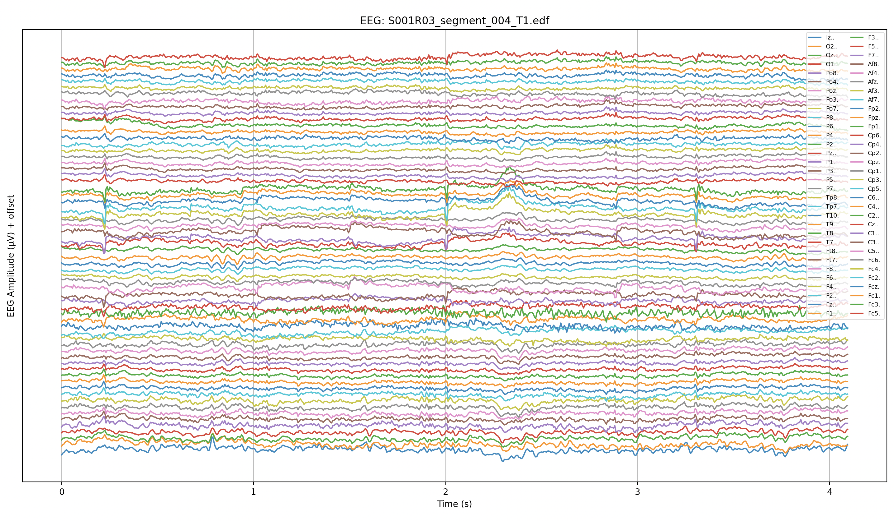
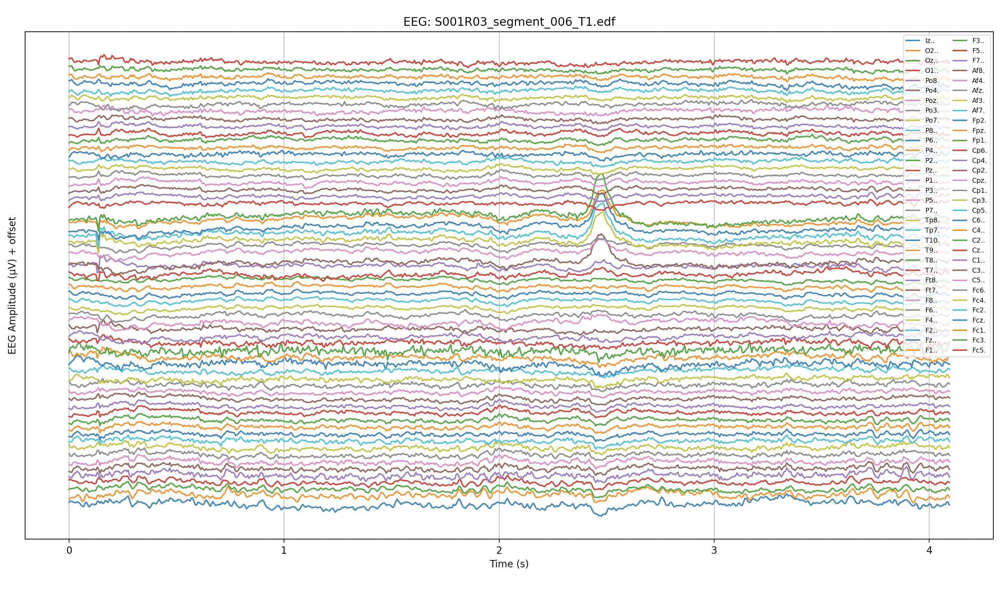
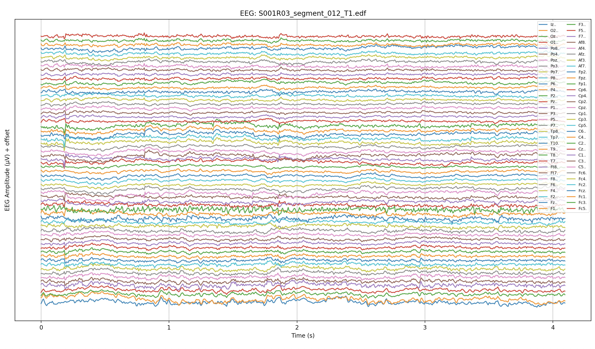
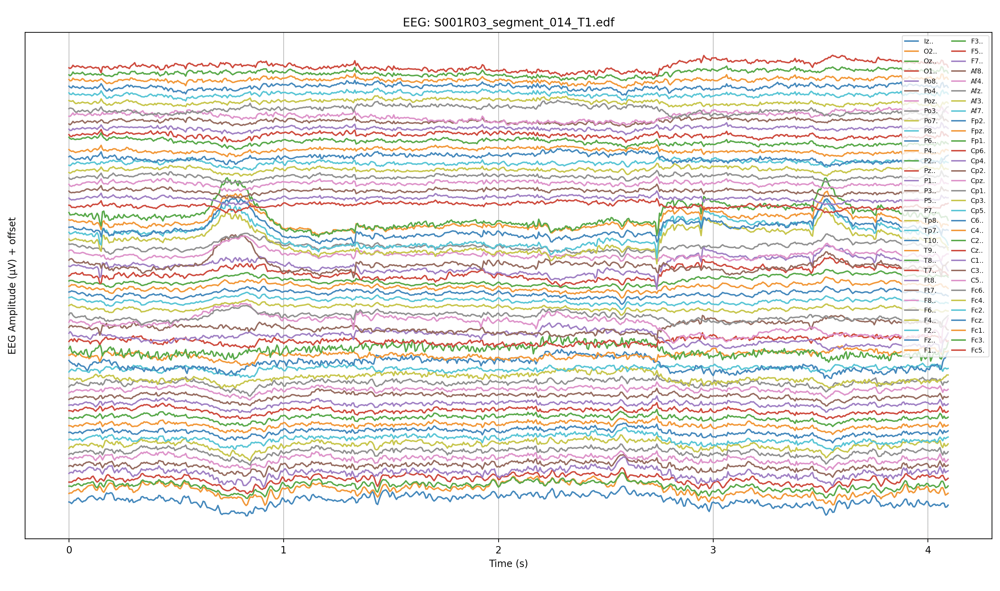
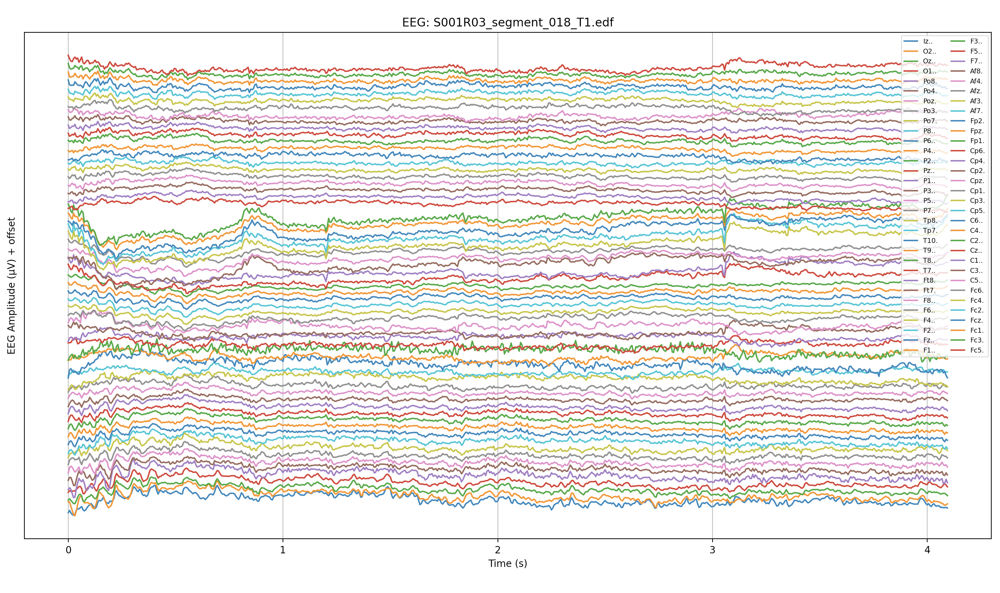
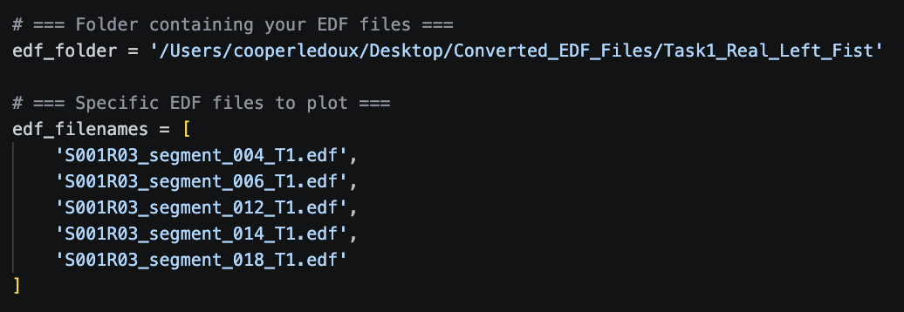

Loads a hand-picked list of segmented EDF trials and renders one stacked time-domain plot per file for direct visual comparison.
After segmentation produces hundreds of short EDF trials, it is easy to lose sight of what the raw signal actually looks like trial-to-trial. This script targets a named list of specific segments from a single subject and class, plotting each one in its own figure. The goal is a quick sanity check: do these five trials look like the same underlying motor event, or is there visible variability that would make classification hard?
for filename in edf_filenames:
raw = mne.io.read_raw_edf(edf_path, preload=True, verbose=False)
raw.pick('eeg')
raw.set_eeg_reference('average', projection=False)
data, times = raw.get_data(return_times=True)
data = data * 1e6
# Reverse channel order so scalp top is drawn at the top
data = data[::-1]
ch_names = ch_names[::-1]
for ch in range(n_channels):
plt.plot(times, data[ch] + ch * offset, label=ch_names[ch])
plt.title(f'EEG: {filename}')
plt.yticks([])The average reference (set_eeg_reference('average')) removes the common-mode signal shared across all electrodes before plotting, which makes trial-to-trial differences easier to see. Reversing the channel order is a cosmetic choice: anatomically, frontal channels should appear at the top of a stacked plot, matching the top-of-head convention used in topomaps.
The fixed 80 µV offset per channel was chosen by inspecting the amplitude range from Script 16. With a ±200 µV typical range per channel and an 80 µV offset, traces for adjacent channels touch but rarely overlap badly — which is the right tradeoff between compactness and legibility.





